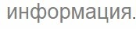
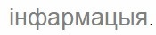

Электронное приложение к учебному пособию
Электронны дадатак да вучэбнага дапаможніка

A
A

Материал учебного пособия разделен на две колонки. Цвет фона поможет вам разобраться в назначении размещенной на этом фоне информации:
Матэрыял кожнага параграфа падзелены на дзве калонкі. Колер фону дапаможа вам разабрацца ў прызначэнні размешчанай на гэтым фоне інфармацыі:
В учебном пособии используются следующие условные обозначения:
 — раздел «Упражнения» содержит задания для выполнения в тетради;
— раздел «Упражнения» содержит задания для выполнения в тетради;
У электронным дадатку да вучэбнага дапаможніка выкарыстоўваюцца наступныя ўмоўныя абазначэнні:
— раздзел «Практыкаванні» змяшчае заданні для выканання ў сшытку;
* — задание или пример для любознательных.
Некоторые термины в тексте подсвечиваются серым цветом, например:  При наведении на них курсора появляется всплывающее окно с определением:
* — заданне або прыклад для дапытлівых.
Некаторыя тэрміны ў тэксце падсвечваюцца шэрым колерам, напрыклад:  Пры навядзенні на іх курсора з’яўляецца ўсплываючае акно з азначэннем: